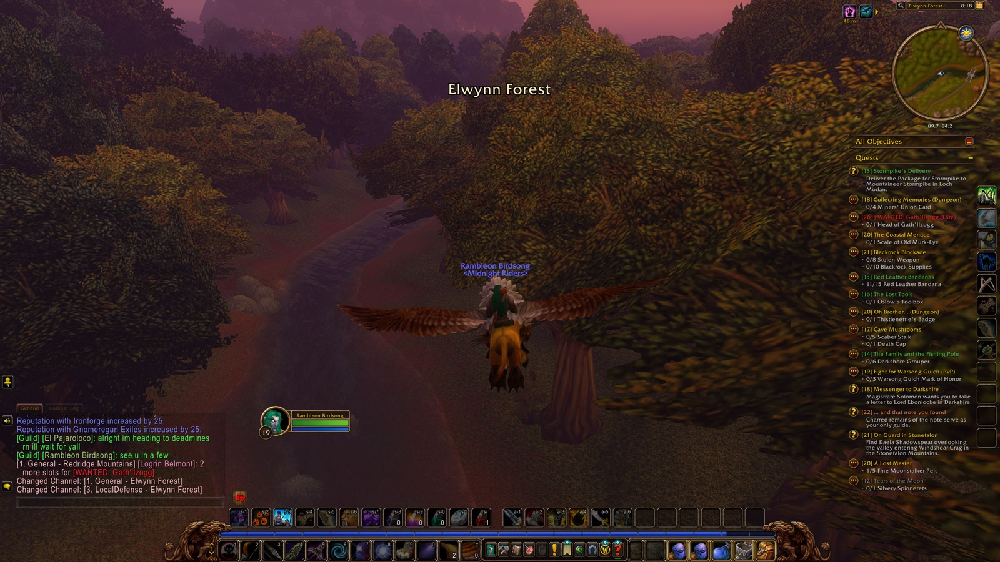
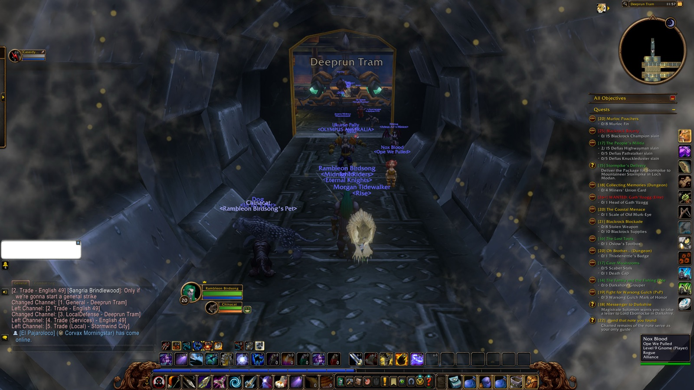

| Quest | Turned in at | Lv |
|---|---|---|
| Redridge Mountains | ||
| Show of Force | 19 | |
| An Unwelcome Guest | Lakeshire | 20 |
| Westfall | ||
| Red Leather Bandanas | Sentinel Hill | 19 |
| The People's Militia | Sentinel Tower | 20 |
| Stormwind City | ||
| Speaking of Fortitude | Royal Library | 20 |
| Ironforge | ||
| Tinkmaster Overspark | Tinker Town | 20 |
| Quest | Picked up at |
|---|---|
| The People's Militia | Sentinel Tower |
| Blackrock Bounty | Redridge Mountains |
| Murloc Poachers | Lakeshire |
| Gyrodrillmatic Excavationators | Dwarven District |
| Brother Paxton | Royal Library |
| Claiming Arathi Basin | Stormwind Keep |
| Save Techbot's Brain! | Tinker Town |
| Find Bingles | Tinker Town |
| The Day After | Tinker Town |
| Quest | Picked up at | Since |
|---|---|---|
| On Guard in Stonetalon | Astranaar | Chapter 1 |
| The Tower of Althalaxx | Maestra's Post | Chapter 1 |
| Oh Brother... | Dwarven District | Chapter 1 |
| Collecting Memories | Dwarven District | Chapter 1 |
| ... and that note you found | Alexston Farmstead | Chapter 2 |
| Assessing the Threat | Redridge Mountains | Chapter 2 |
| Blackrock Menace | Lakeshire | Chapter 2 |
| Blackrock Blockade | Lakeshire | Chapter 2 |
| The Lost Tools | Lakeshire | Chapter 2 |
| The Price of Shoes | Lakeshire | Chapter 2 |
| WANTED: Gath'Ilzogg | Lakeshire | Chapter 2 |
| WANTED: Incinerator Gar'im | Lakeshire | Chapter 2 |
| Solomon's Law | Lakeshire | Chapter 2 |
| Selling Fish | Lakeshire | Chapter 2 |
| WANTED: Lieutenant Fangore | Lakeshire | Chapter 2 |
| Dry Times | Lakeshire | Chapter 2 |
| Redridge Goulash | Lakeshire | Chapter 2 |
| Hilary's Necklace | Lake Everstill | Chapter 2 |
| The Coastal Menace | Sentinel Hill | Chapter 2 |
| Thunderbrew | The Dagger Hills | Chapter 2 |
| The Stockade Riots | Stormwind City | Chapter 2 |
| Messenger to Darkshire | Lakeshire | Chapter 2 |
As far as Rambleon knows: a quest picked up before it was installed, or abandoned before it recorded that, is not here.
Rambleon Birdsong “riderss!!!”
Wilfer Sting “RIDER OF ROHAN”
El Pajaroloco waves.
Invicta Vtube yawns sleepily at Roberto Pupellyverbos.
Invicta Vtube falls asleep. Zzzzzzz.
Rokaden Menethil slaps Larsa Angelsin across the face. Ouch!
Rokaden Menethil slaps Larsa Angelsin across the face. Ouch!
Rokaden Menethil slaps Larsa Angelsin across the face. Ouch!
Rokaden Menethil pokes Larsa Angelsin. Hey!
Malice Heals yells “WHAT THE HELL IS WRONG WITH SERVER”
Kreeze Angel yells “LF1M TANK STOCKADES”
Krunder Forever yells “TIM HORTONS”
Rendoriath Ashcroft yells “DUNKIN'!”
Sarah Fier yells “7 BREW”
Carmella Spellprano lies down before Auctioneer Chilton.
Rambleon Birdsong “which one goes to IF?”
Anider Haðinn “Both.”
Rambleon Birdsong “oh nice thx”
Anider Haðinn “They just alternate.”
Rambleon Birdsong “thx brother”
Anider Haðinn “No problem.”



